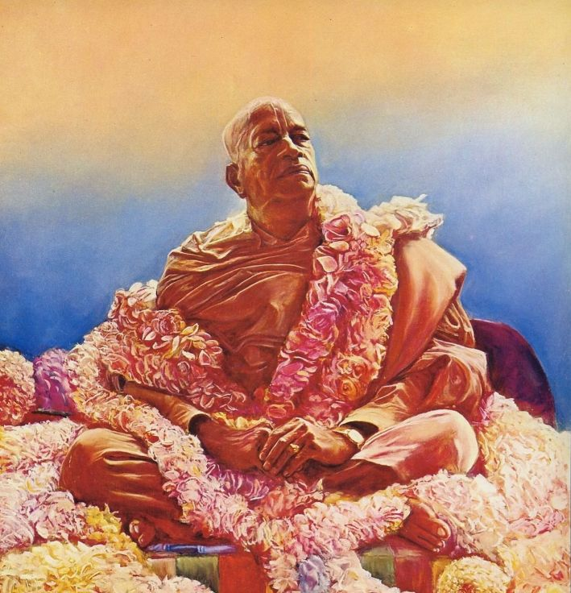

Prabhupād's Krsna Conciousness
Posted on : 26th December, 2024

At the top was a storage area filled with Srimad Bhãgavatams that had been ruined by being kept in a damp place and were infested with worms. Seeing the books, Prabhupada became livid. "How did this happen?" he demanded. "Who allowed this to happen" He quickly descended the stairs, and, as devotees moved aside to make way for him, stormed out of the cottage. Years later, Jagat Purusa could still remember the trembling of Prabhupada's lipsThe intensity of his fury was indescribable."
Prabhupada strode from the cottage toward the back of the property, in the direction of the chãtãi hut. On the way, the devotees were silent, devastated that their spiritual master was upset and feeling helpless to do anything about it. As he approached the front of the hut, Prabhupada saw the corner stone that he had personally laid two years earlier lying on the ground near the entrance, broken in two pieces. Again he asked, "What is this?" Srila Prabhupada's anger was terrifying, Jagat Purusa recalled. "It was so intense that one would expect a cloud of anger to remain in the air for the entire day, if not days or weeks." The devotees were crestfallen ashamed and dejected--but Prabhupada's anger did not last long. “When I went to the roof to have darshan that afternoon," Jagat Purusa said, "I was wondering if he would still be exhibiting his anger and continue to chastise the devotees for our carelessness. On the contrary, though, I found him in a very jovial mood, conversing with guests and disciples and never mentioning the books or the broken cornerstone."
"I was thinking that Prabhupada's Krishna consciousness was so deep that nothing absolutely nothing-could disturb his devotional service, especially the service of giving Krishna to others. It was amazing to witness his sudden and complete change of mood. The anger he showed was for us; he never carried it within him. It was instructive anger-he had no anger in him other than anger and anxiousness for seeing that Krishna and his spiritual master were served nicely."
Ref ~ I'll build you a temple the juhu story by Giriraj swami, page.231